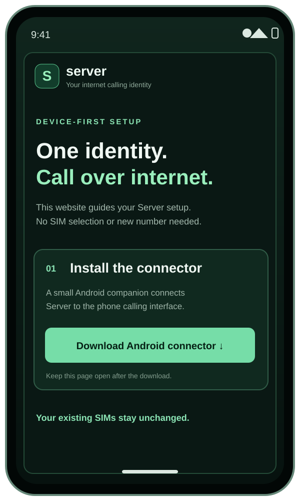
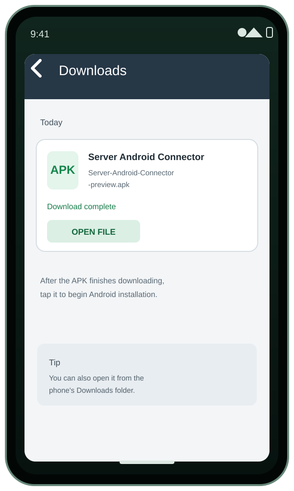
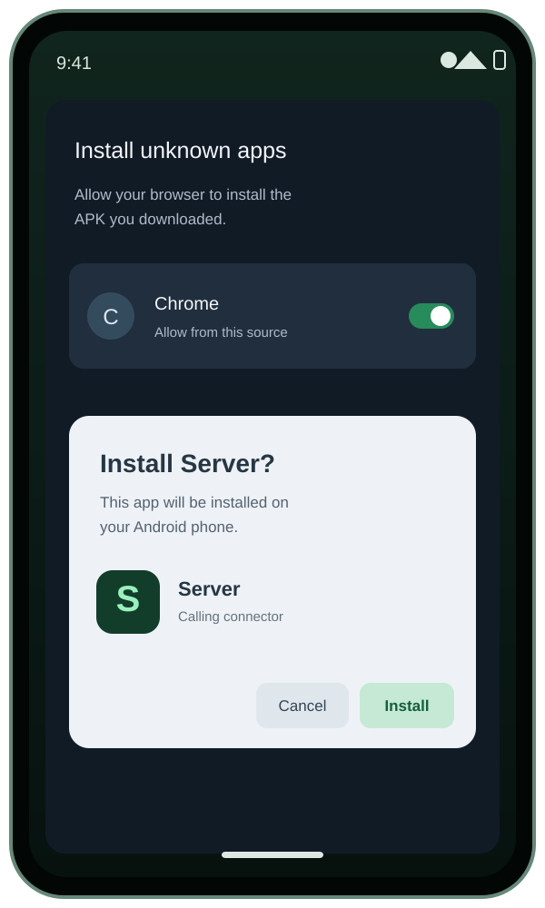
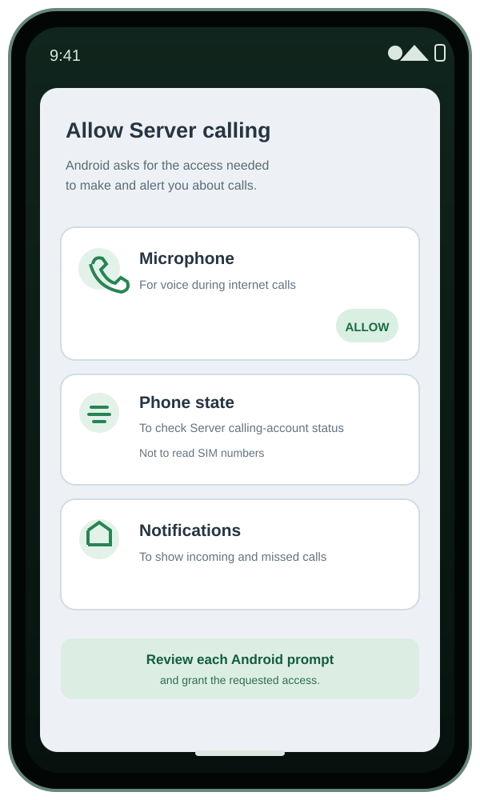
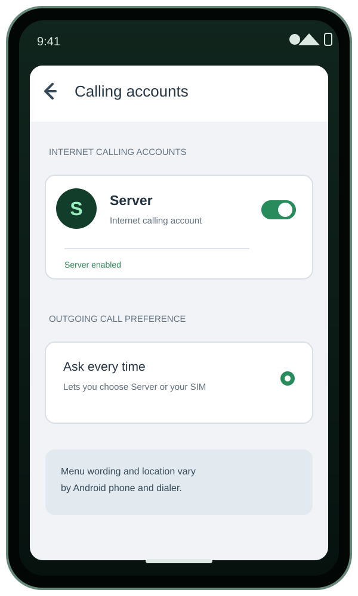
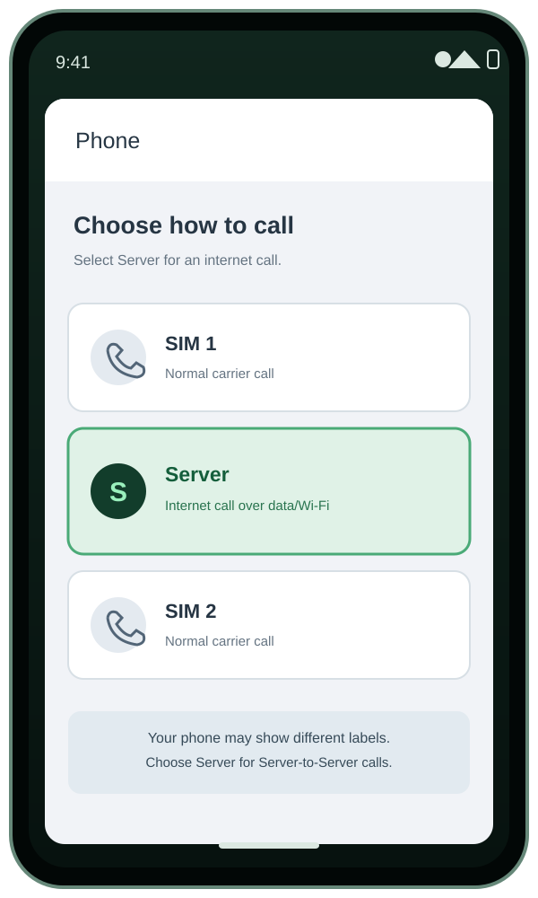

STEP 01
Open the Server website
The website is the starting point. Keep it open while you install the Android connector.
Every call starts in Server and uses the internet. A Server member with a fresh connection is reached through the Server receiver. A non-member is reached through a secure, caller-identified browser invitation: once that number has enrolled a browser call receiver, Server can send a Web Push alert over Wi-Fi or mobile data, and the recipient answers through WebRTC without installing Server. For first contact, the invitation must be shared once so the recipient can enable browser call alerts. Server does not switch an unanswered internet call to a mobile operator.
This small Android companion connects Server to Android's system calling interface. It does not read SIMs, carrier names, phone numbers or subscriber identifiers. Server calls use mobile data or Wi-Fi; no SIM selection or carrier fallback is required.
Use this ARM64 build on most current Android phones. For an older phone that only supports 32-bit Android, use the ARMv7 option below. These are phone builds; emulator-only x86 packages are not offered here.
Download 32-bit ARM connector (ARMv7)This is an Android preview build distributed directly for testing, not a Play Store release. Android may ask you to approve installing apps from this source.
After Server is installed, come back to this page and tap the button. It opens the small connector and shows this same website again, with the native permission bridge enabled.
iPhone uses a separate native Server app and Apple's calling-app permissions. The Android APK above cannot be installed on iPhone; the iOS setup will be released separately.
Every call is registered in Server. Server members and enrolled non-member browser receivers are reached over the internet. Non-members answer through a secure browser link and WebRTC; they do not need a Server account or app. If no receiver is reachable, Server reports the call as unreachable instead of switching to a carrier network.
Allow microphone access for call audio and notifications for incoming calls. Contacts access, if granted, is used only on this phone to match caller numbers against names already saved in your address book; contacts are never uploaded. Server does not need a selected SIM to place an internet call.
This is the caller name shown in Server guest-call previews, browser alerts and call screens. Use the name you want recipients to recognise. It is your Server profile name, not a phonebook lookup or an independently verified Truecaller identity.
Your Server ID is ready. Server calls use WebRTC over the internet. When you call a non-member, Server sends a caller-identified browser push alert if that phone number has previously enrolled a guest receiver. On first contact, share the secure invitation once; the recipient can enable call alerts in their browser and answer without installing Server. If no internet receiver is available, Server records the attempt as unreachable—no mobile-operator fallback is placed.
Install the companion app on an Android phone whose SIM you allow Server to use for first-contact SMS invitations. Pairing uses your active Server session; you do not need to link or verify your own phone number first. Grant Android SMS permission and start the visible gateway service. Your mobile operator may charge for SMS.
Download Server SIM Gateway (Android companion) ↓Next, enable Server under Android Calling accounts. Calls placed through Server use mobile data or Wi-Fi. If the recipient cannot be reached through Server, the attempt is marked unreachable; Server never switches automatically to a cellular SIM. You can still place a separate ordinary cellular call from your phone's Phone app.
Server is an Android internet-calling account, not a second cellular SIM. Android dialers differ, so the exact placement of Server in the system's call choices depends on the phone and dialer version.
SETUP, STEP BY STEP
Follow the illustrated Android setup journey. Android wording and screen layouts vary by phone brand and version.

The website is the starting point. Keep it open while you install the Android connector.

Tap Download Android connector. When the file finishes, open it from Chrome Downloads.

Approve Android's install prompt. Android may first ask Chrome or Files to allow installation from this source.

Accept the terms, then allow microphone access for call audio and notifications for incoming-call alerts. Contacts access is optional and is used only on this phone to match numbers against names already saved in your address book; contacts are never uploaded. Server does not request SIM-reading or phone-state permission.

Turn on Server in Android Calling accounts. Choose Server in the Phone app when you want an internet call. If Server cannot reach the recipient, it reports the attempt as unreachable; it does not hand the call to a SIM.

Use the normal Phone app's call choices and select Server for an internet call. Carrier SIM choices remain available for normal cellular calls.
About these pictures: They are explanatory illustrations, not screenshots from every Android phone. Exact prompts and call-choice layouts vary by device. Server calls use WebRTC over mobile data or Wi-Fi. Non-members can answer from a secure browser invitation after enabling call alerts; no Server app or account is required on their phone. Server never converts a failed internet call into a carrier call.